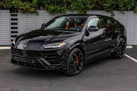
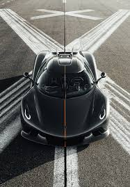
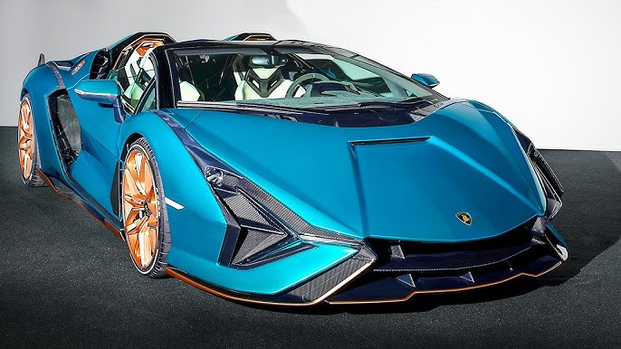

Lamborghini Urus is the first Super Sport Utility Vehicle in the world, merging the soul of a super sports car with the practical functionality of an SUV. Powered by Lamborghini’s 4.0-liter twin turbo V8 engine and, in the case of Urus SE, a powerful electric motor, the Urus embodies a performance mindset that combines Fun-to-Drive with astounding vehicle capabilities. The design, performance, driving dynamics, and unbridled emotion flow effortlessly into this visionary realization of authentic Lamborghini DNA, revolutionizing an entire segment. A declaration of freedom, Urus enables you to discover any terrain, from track to sand, ice, gravel or rocks. It is the absolute all-round super sports car and more. It allows you to explore new paths and new ways to express yourself—to accept challenges confidently and to live life to the fullest. You are not afraid to go far: this is what you aspire to. Unlock any road, unlock your personality.
 koenigsegg jeskothe jesko They feature a redesigned 5.0 litre twin-turbo V8 engine producing 1280 hp on standard gasoline and 1600 hp on E85 biofuel (in some markets) alongside the revolutionary new 9-speed Koenigsegg Light Speed Transmission (LST) system. Advanced aerodynamics offer over 1000 kg of downfo making it the ultimate track weapon.The Koenigsegg Light Speed Transmission (LST) represents a scale of evolution not seen since the development of modern dual-clutch technology at the turn of the century. LST consists of nine forward gears and seven wet, multi-disc clutches in one compact, ultra-light package. The LST is capable of upward and downward gear changes at near light speed thanks to the simultaneous opening and closing of clutches that allows for totally seamless acceleration and deceleration. That LST gear changes can occur in virtually zero time between adjacent gears is impressive. What takes LST from impressive to evolutionary, however, is that these shift-time benefits apply when changing between any forward gears.
 sf90 spider ferraiThe values of fuel consumptions and CO2 emissions shown were determined according to the European Regulation (EC) 715/2007 in the version applicable at the time of type approval. The fuel consumption and CO2 emission figures refer to the WLTP cycle. The SF90 Spider has plug-in hybrid architecture in which the internal combustion engine is integrated with two electric motors at the front, which comprise the RAC-e (Cornering Angle Regulator, Electric) system, and one at the rear derived from and named after a Prancing Horse Formula 1 innovation, the MGUK (Motor Generator Unit, Kinetic). The synergy between the internal combustion engine and the electric motors unleashes a maximum of 1,000 cv and puts the SF90 Spider not only at the very top of its category but also the Maranello range.
 sian roadster
sian roadster
The first open-top hybrid Lamborghini super sports car to feature a supercapacitor, the Sián Roadster roars with electrified intensity, resonating with the inimitable V12 sound from the most powerful Lamborghini engine to date. Limited to only 19 examples, the Sián Roadster advances hybrid technology with the world’s first use of a supercapacitor in a materials-science application unique to the industry. The futuristic Lamborghini design features long, sculptured contours and distinctive aero wings to define a commanding and powerful profile, a shape that is pure and purposeful. The very low front, enhanced by an integrated carbon fiber splitter and the iconic Lamborghini Y-shaped headlights, optimizes aerodynamic efficiency, for a sensation perceptible from within the open-air cabin. 3D Lamborghini elevates the design of its hybrid cars with sophisticated aluminum details painted in Oro Electrum (gold), the color Lamborghini has chosen to identify it’s hybrid cars. The purposeful interior of the Sián Roadster embraces this elegant effect with Y-shaped features and distinctive hexagonal accents harkening back to the first Lamborghini Miura. Every touch reflects meticulous attention to detail, from the driver controls to the newly designed air vents produced by special 3D printing, a technology that allows a customer’s initials to be incorporated into the vent design. Added to the impeccable dynamics of the vehicle and the performance qualities of the aspirated engine are the excellence of its design, where very fine and exclusive materials come together in symbiosis with an ultralight body.  >